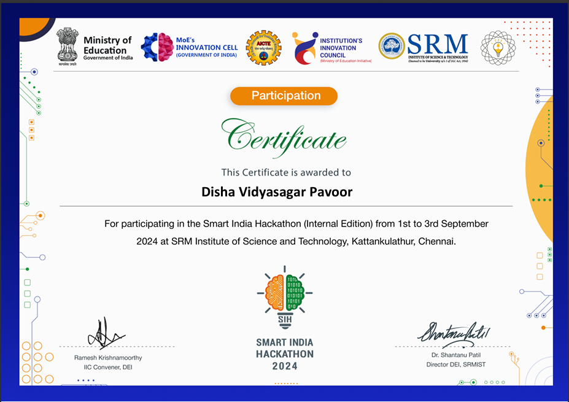
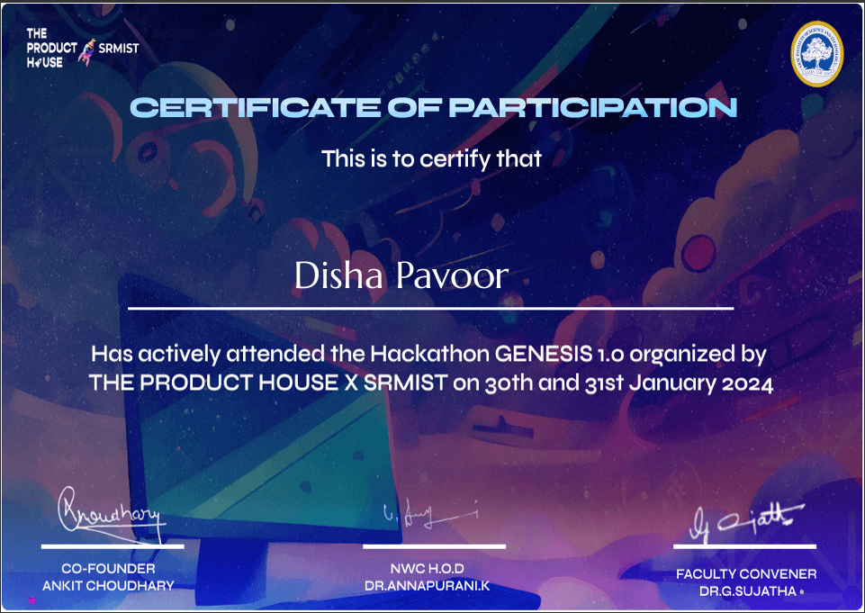

Hackathons and Skills
I have participated in two hackathons so far— one in my first year and another in my second year. Here are the details of each hackathon and my position/status in them.
Smart India Hackathon
I recently participated in the Smart India Hackathon (internal round) organized by my university with five teammates. Together, we developed FarmHith, a website designed to streamline access to essential services for farmers, including soil testing laboratories and bio-pellet plants. We also introduced Soil Mitra, an expert feature providing personalized recommendations to improve crop yield, making it easier for farmers to access actionable insights and services.
Status: Selected by the University for the main Hackathon.
Genesis Hackathon
In my first year, I participated in the Genesis Hackathon with my team. We worked on building Cryptokitties, a unique project inspired by cryptocurrency but with a twist—the currency was represented by digital kittens. Our aim was to create a fun, engaging platform that combined the concept of digital assets with a playful approach.
Status: Participation
SKILLS
Here are some key skills I've developed through my participation in various hackathons and events.
Tech Skills:
Programming Languages:
Java, Python, C++, HTML, CSS,
JavaScript
DBMS: MySQL, CSV
Machine Learning:
KNN, Decision Trees, Logistic
Regression
General SKills:
Organized Communication, Team Work, Meeting Deadlines, Critical Thinking, Analytical Thinking, Decision Making, Adaptability, Learnability, Project Planning, Public Speaking, Interpersonal Skills.